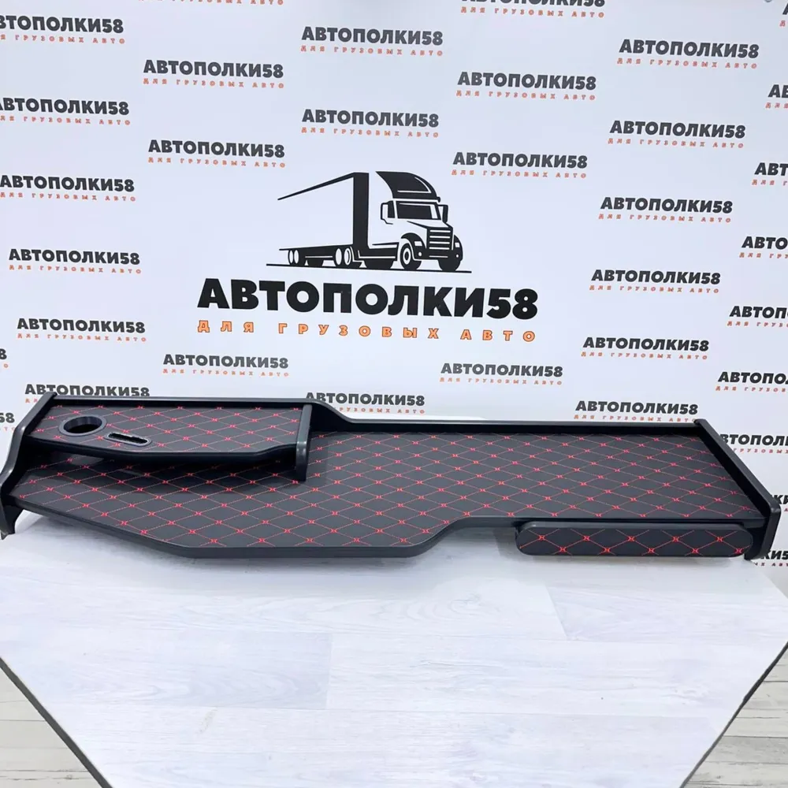

Черновой образец · 3D
Полка SHACMAN X3000 · 2 яруса
Поверните модель мышью или пальцем и сравните её с оригинальными кадрами Ozon.
Поворотная модель
Увеличение — колесом мыши. Надпись SHACMAN на боковине сохранена.
Оригиналы из карточки Ozon

Что показывает эта проба
Это приблизительная 3D-геометрия, собранная по ракурсам и размеру 135 × 35 см из карточки Ozon. Невидимые задняя и нижняя стороны, высота деталей и точная форма вырезов не измерены. Использовать модель как доказательство совместимости с торпедой или как фото товара нельзя.